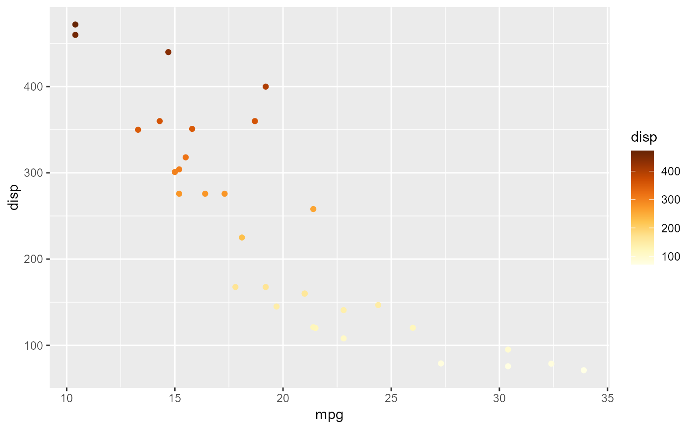

grafify internally includes color-blind compatible schemes for fill and color/color aesthetics.
Note that this scheme is only for continuous variables and has one palette (yellow_conti) modified from the YlOrBr scheme from RColorBrewer.
scale_color_grafify_c(reverse = FALSE, ...)Arguments
- reverse
Whether the color order should be reversed.
- ...
Additional parameters for
scale_fillorscale_color
Value
ggplot scale_fill function
Details
Colour palettes available are as follows:

Colours available can be seen quickly with plot_grafify_palette.
Examples
#basic usage on mtcars data with x and y quantitative axes
ggplot(mtcars, aes(x = mpg, y = disp))+
geom_point(aes(color= disp), size = 3)+
scale_color_grafify_c()
